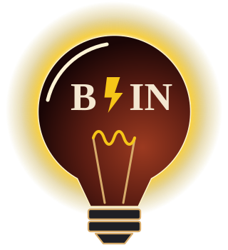

Black-In · Verein zur Krisenvorsorge
Licht, wenn's dunkel wird.
Praktisches Wissen, um gelassen durch Stromausfälle, Versorgungsengpässe und andere Krisen zu kommen. Für die Zeit davor, währenddessen und danach.

Unser Ansatz
Vorsorge in drei Phasen
Krisen haben einen Ablauf. Wer weiß, was in welcher Phase zählt, bleibt handlungsfähig und kann anderen helfen.
Vorbereiten
Vorräte anlegen, einen Familienplan machen, wichtige Dinge griffbereit haben. In ruhigen Zeiten geht das ohne Stress.
Ruhig handeln
Verlässliche Informationen nutzen, Vorräte richtig einteilen und auf Nachbarn und Angehörige achten.
Verarbeiten
Vorräte auffüllen, Erfahrungen festhalten und darüber reden. Auch die Psyche braucht Erholung.
Vorsorge-Wissen
Die wichtigsten Themen
Kurz, verständlich und ohne Panikmache. Wählen Sie ein Thema.
Blackout & Stromausfall
Was tun, wenn über Stunden oder Tage der Strom fehlt?
Weiterlesen →Wasser & Lebensmittel
Ein Vorrat für 14 Tage, einfach angelegt und laufend genutzt.
Weiterlesen →Gesundheit & Psyche
Hausapotheke, Medikamente und seelische Stärke in schwierigen Zeiten.
Weiterlesen →Wirtschaftliche Krisen
Haushaltsbudget, Notgroschen und wo es Unterstützung gibt.
Weiterlesen →Kommunikation & Warnung
Sirenensignale, Radio und Kontakt halten ohne Handynetz.
Weiterlesen →Familie & Nachbarschaft
Ein Notfallplan für alle und warum gute Nachbarschaft zählt.
Weiterlesen →Schnellstart
5 Dinge, die Sie heute erledigen können
Vorsorge muss nicht kompliziert sein. Mit diesen fünf Schritten sind Sie schon besser vorbereitet als die meisten Haushalte.
- 1Wasser für 14 Tage einlagernMindestens 2 Liter pro Person und Tag, also 28 Liter pro Person.
- 2Taschenlampe und Batterien bereitlegenAn einem Ort, den alle im Haushalt kennen.
- 3Batterie- oder Kurbelradio besorgenBei Stromausfall die wichtigste Informationsquelle.
- 4Medikamente prüfenDauermedikamente sollten für mindestens 2 Wochen reichen.
- 5Treffpunkt in der Familie ausmachenFür den Fall, dass niemand telefonisch erreichbar ist.
Für den Ernstfall
Wichtige Nummern in Österreich
Schreiben Sie diese Nummern auch auf Papier. Ein Handy kann leer sein.
Wer wir sind
Ein gemeinnütziger Verein aus dem Großen Walsertal
Black-In wurde gegründet, damit Menschen in Krisen nicht allein dastehen. Wir geben Wissen weiter, organisieren Vorträge und Schulungen und helfen dort, wo Hilfe gebraucht wird.
„Vorbereitet sein heißt nicht, Angst zu haben, sondern ruhig bleiben zu können.“
Unser Leitgedanke